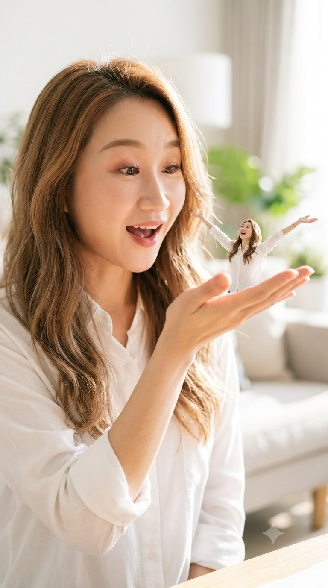

오늘의 프롬프트AI로사쌤 · 17번
손바닥 위 나의 미니미, 사진에서 영상까지
먼저 사진을 만들고, 그 사진으로 영상을 만드는 두 단계예요. 남녀 누구나 쓸 수 있어요.
1단계사진 만들기

제미나이나 챗GPT에 본인 사진을 먼저 올리고, 아래 프롬프트를 붙여넣으세요.
업로드한 사진 속 인물을 주인공으로 한 실사 합성 사진. 얼굴을 그대로 반영하고 이목구비, 얼굴형, 헤어스타일, 안경을 바꾸지 말 것. 여성이면 여성, 남성이면 남성으로 표현.
장면: 한 화면에 같은 인물이 두 크기로 등장. 큰 인물은 실제 크기로 한 손바닥을 얼굴 옆 높이에 펴 들고 그 위를 놀라고 즐거운 표정으로 바라봄. 그 손바닥 위에는 엄지손가락만 한 크기의 똑같은 얼굴과 똑같은 옷을 입은 작은 인물이 서서 큰 인물을 올려다보며 두 팔을 벌려 웃고 있음. 두 인물 모두 같은 단정한 흰 셔츠 차림.
구도: 큰 인물의 얼굴과 손바닥이 함께 크게 보이는 상반신 클로즈업, 큰 얼굴과 작은 인물 모두 초점이 맞게. 배경은 햇살 드는 밝은 거실을 부드럽게 흐림.
고해상도 4K 실사, 두 인물의 얼굴 디테일과 손바닥 주름까지 선명하게, 자연스러운 손가락, 이미지 안에 글자·로고·워터마크 없음, 세로 9:16.
2단계영상 만들기
1단계에서 만든 사진을 영상 도구에 첫 장면으로 올리고, 아래 프롬프트를 붙여넣으세요.
첫 프레임 속 두 인물의 얼굴, 헤어스타일, 안경, 의상을 끝까지 그대로 유지. 작은 인물은 계속 엄지손가락 크기를 유지.
0~3초: 손바닥 위 작은 인물이 제자리에서 폴짝폴짝 뛰며 두 팔을 흔들고, 큰 인물이 놀란 듯 눈이 커졌다가 웃음을 터뜨림.
3~6초: 큰 인물이 다른 손 검지를 살며시 내밀자 작은 인물이 그 손끝에 두 손을 대고 하이파이브를 함.
6~10초: 작은 인물이 손바닥 가장자리에 걸터앉아 다리를 흔들고, 큰 인물이 카메라를 보며 한국어로 말한다: "제 미니미를 소개할게요. 귀엽죠?" 작은 인물이 카메라를 향해 손을 흔듦.
카메라는 두 인물이 함께 보이는 구도를 유지하며 손바닥 쪽으로 아주 천천히 줌 인. 소리는 아기자기한 실로폰 선율과 작은 효과음.
4K 고해상도 실사 영상, 10초 원테이크, 움직임은 자연스럽고 부드럽게, 얼굴과 손 변형 없음, 대사는 입 모양에 맞춰 자연스럽게, 화면에 자막·글자·로고 없음.
출처 · AI로사쌤